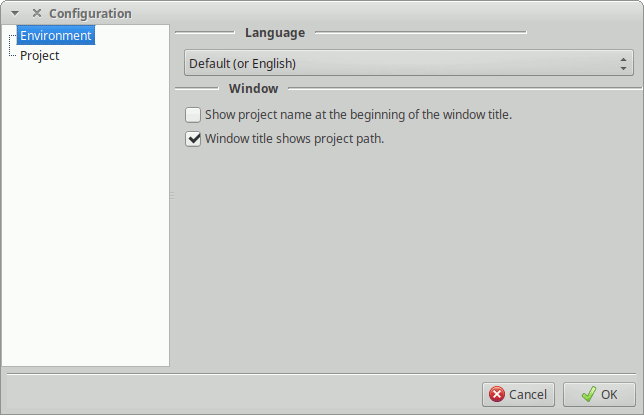

Here you can change how MLSDE looks and works.

You can select the language from the drop down. Best option is Default (or English).
Here you can select how the main window works.
At the moment you can select the information that appears in the title.